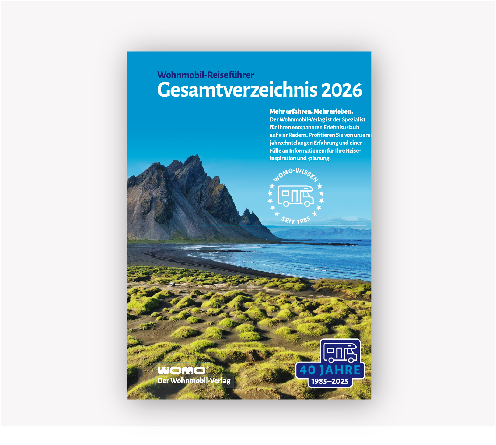
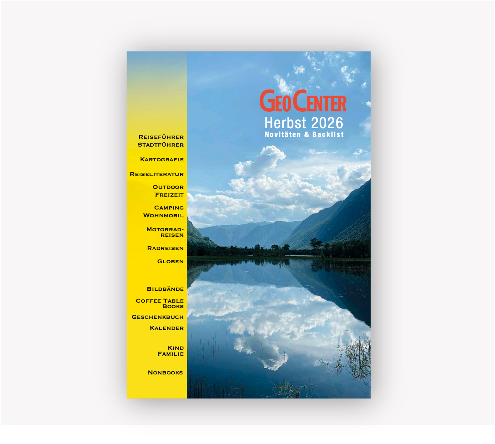

Unser Programm.
Nach Themen gedacht.
Von Rad, Wohnmobil und Outdoor über Coffee Table und Bildband bis zu Karten, Globen, Familie und Puzzle: Entdecken Sie unser Sortiment so, wie Sie es im Handel brauchen – nach Themen, nicht nach Verlagsnamen.
Direkt ins Sortiment einsteigen.
Rad & Radtouren
Radführer, Radkarten, Tourenplanung und aktive Freizeit.
Wohnmobil & Camping
Wohnmobilführer, Stellplatzführer, Camping und Touren.
Wandern & Outdoor
Wandern, Natur, Wassersport und aktive Erlebnisse.
Coffee Table, Bildband & Design
Fotografie, Architektur, Kunst, Lifestyle und hochwertige Bildwelten.
Karten & Globen
Kartografie, Weltkarten, Globen und geografische Spezialprodukte.
Reise & Entdecken
Individualreisen, Länder, Regionen und besondere Reiseformate.
Familie & Kinder
Reisen, Wissen und Entdecken für Familien.
Geschenk & Inspiration
Anlassstarke Titel und kuratierte Verkaufsübersichten.
Puzzle & Spiel
Visuelle Produkte für Familie, Geschenk und Impuls.
Radkompetenz mit Tradition.
Tourenbücher, Radkarten und Wanderprogramme für aktive Kundinnen und Kunden. Den Auftakt macht unser langjähriger Partner Esterbauer mit bikeline und hikeline.
Unterwegs mit dem Wohnmobil.
Wohnmobilreisen, Stellplätze, Camping und Tourenplanung bilden eine eigene, starke Sortimentswelt. WOMO steht dabei prominent für einen der etablierten Spezialverlage des Segments; Dolde, ECC und DCC ergänzen das Thema mit Stellplatz- und Campingführern.

Draußen zuhause.
Wandern, Natur und Wassersport ergänzen das aktive Sortiment und machen die Outdoor-Welt bewusst breiter als klassische Reise.
Große Bilder. Starke Flächen.
Coffee Table Books, Fotografie, Design und Architektur gehören zu den wichtigen Standbeinen unseres Programms – visuell stark und ideal für hochwertige Präsentationen.
Die Welt im Blick.
Karten, Globen und geografische Spezialprodukte verbinden Funktion, Orientierung und hochwertige Präsentation. Der Räthgloben-Katalog wird ergänzt, sobald das Cover vorliegt.

Reise bleibt Teil unserer DNA.
Individualreisen, Länder, Regionen und Familienreisen – kuratiert für unterschiedliche Zielgruppen und Sortimente.
Gemeinsam entdecken.
Reise, Wissen und visuelles Entdecken für Kinder und Familien – mit eigenständigen Programmen und Überschneidungen zu Reise und Design.
Für Anlass, Impuls und Präsentation.
Hier bündeln wir passende Verlagsprogramme und von GeoCenter zusammengestellte Verkaufsübersichten – unabhängig davon, ob ein Verlag einen eigenen Katalog anbietet.
Visuell. Spielerisch. Impulsstark.
Puzzles und spielerische Produkte erweitern das Sortiment über das klassische Buch hinaus und funktionieren besonders gut auf Geschenk- und Aktionsflächen.
Karten & Blattschnitte.
Welches Kartenblatt deckt welche Region ab? Unsere Blattschnitte helfen dabei, schnell die passende Reihe, Region und geografische Abdeckung zu finden.
Sie suchen ein bestimmtes Sortiment?
Wir unterstützen Sie gerne dabei, passende Titel und Produktwelten für Ihren Standort und Ihre Zielgruppe zusammenzustellen.